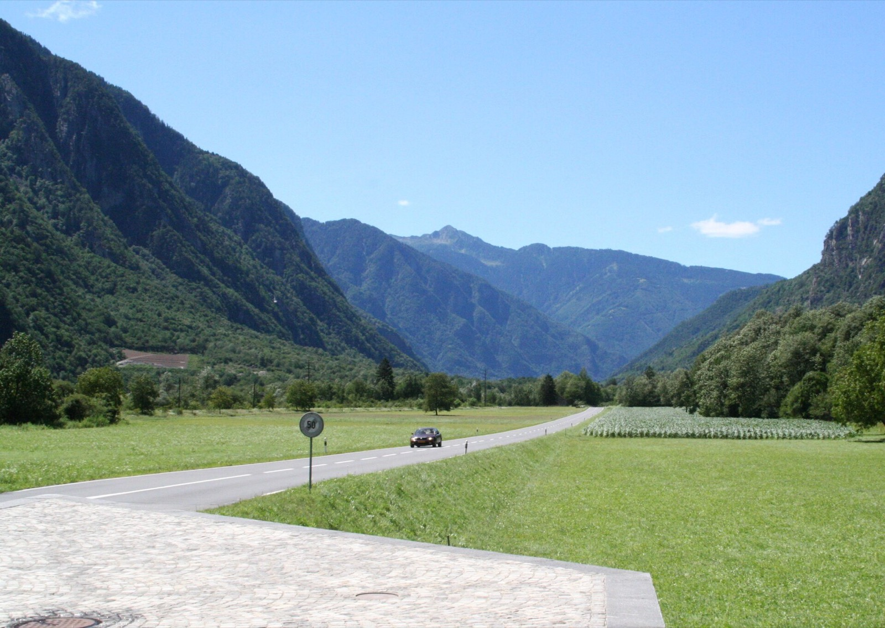

Dal 1942
84 anni di cantieri, la stessa valle.
I fratelli Somaini lavorano in Mesolcina dal 1942. Nel 1976 la società in nome collettivo diventa F.lli Somaini SA, con sede a Grono. Dal 2019 c'è anche una sede a Mesocco, in alta valle.
Oggi l'impresa fa tutto il percorso di un'opera: scavo, calcestruzzo, prefabbricati, struttura, trasporti. Meno passaggi di mano, un solo interlocutore.
- 1942Inizio dell'attività dei fratelli Somaini
- 1976Nasce F.lli Somaini SA, Grono
- 2019Succursale di Mesocco
- OggiVia Feree 20, Grono

Ottima esperienza con tutti, a partire dal titolare al dirigente e agli addetti.
Una recensione su Google